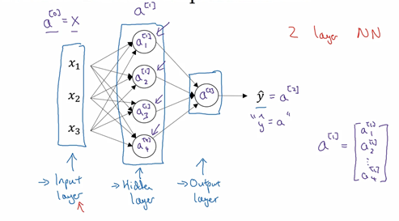
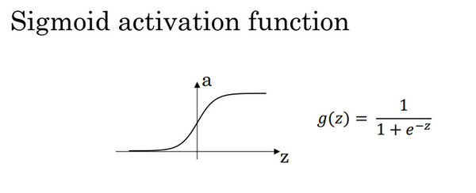
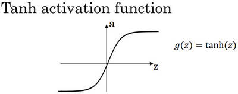

浅层神经网络
Table of Contents
神经网络概述
接下来将学习如何实现一个神经网络
前面讨论了逻辑回归：

如上所示，首先需要输入特征 \(x\) ，参数 \(w\) 和 \(b\) ，通过这些就可以计算出 \(z\) :
\begin{equation} \left. \begin{array}{c} x \\ w \\ b \end{array} \right\} \Longrightarrow z = w^Tx + b \Longrightarrow \alpha = \sigma(z) \Longrightarrow \mathbf{L}(a, y) \end{equation}接下来使用 \(z\) 就可以计算出 \(\alpha\) 。把符号换为表示输出 \(\hat{y} \Longrightarrow \alpha = \sigma(z)\), 然后可以计算出损失函数 \(\mathbf{L}(a, y)\)
神经网络如下图：把许多 \(\mathbf{sigmoid}\) 单元堆叠起来。对于图中的节点，它包含了之前讲的计算的两个步骤：首先计算出值 \(z\) ，然后通过 \(\sigma(z)\) 计算值 \(\alpha\)

在这个神经网络对应的3个节点：首先计算第一层网络中的各个节点相关的数 \(z^{[i]}\) , 接着计算 \(\alpha^{[1]}\) ，在计算下一层网络会使用符号 \(^{[m]}\) 表示第 \(m\) 层网络中节点相关的数，这些节点的集合被称为第 \(m\) 层网络。这样可以保证不会和之前用来表示单个的训练样本的 \(^{(i)}\) (即使用表示第 \(i\) 个训练样本)混淆； 整个计算过程：
第一层：
\begin{equation} \left. \begin{array}{c} x \\ W^{[1]} \\ b^{[1]} \end{array} \right\} \Longrightarrow z^{[1]} = W^{[1]}x + b^{[1]} \Longrightarrow \alpha^{[1]} = \sigma(z^{[1]}) \end{equation}第二层：
\begin{equation} \left. \begin{array}{c} \alpha^{[1]} = \sigma(z^{[1]}) \\ W^{[2]} \\ b^{[2]} \end{array} \right\} \Longrightarrow z^{[2]} = W^{[2]}\alpha^{[1]} + b^{[2]} \Longrightarrow \alpha^{[2]} = \sigma(z^{[2]}) \Longrightarrow \mathbf{L}(a^{[2]}, y) \end{equation}使用另外一个线性方程对应的参数计算 \(z^{[2]}\) ，再计算\(\alpha^{[2]}\) ，这就是整个神经网络最终的输出，用\(\hat{y}\) 表示网络的输出
在逻辑回归中，通过直接计算得到结果
而这个神经网络中，反复的计算 z 和 a，再计算 a 和 z，最后得到了最终的输出loss function
逻辑回归里是从后向前的计算用来计算导数 \(\mathrm{d} \alpha\), \(\mathrm{d} z\) 。同样，在神经网络中也有从后向前的计算，通过计算 \(\mathrm{d} \alpha^{[2]}\), \(\mathrm{d} z^{[2]}\) ，然后计算 \(\mathrm{d} W^{[2]}\), \(\mathrm{d} b^{[2]}\) 等，从右到左反向计算：
\begin{equation} \left. \begin{array}{c} \mathrm{d} \alpha^{[1]} = \mathrm{d} \sigma(z^{[1]}) \\ \mathrm{d} W^{[2]} \\ \mathrm{d} b^{[2]} \end{array} \right\} \Longleftarrow \mathrm{d} z^{[2]} = \mathrm{d}(W^{[2]}\alpha^{[1]} + b^{[2]}) \Longleftarrow \mathrm{d} \alpha^{[2]} = \mathrm{d} \sigma(z^{[2]}) \Longleftarrow \mathrm{d} \mathbf{L}(a^{[2]}, y) \end{equation}
接下来讲述神经网络的表示
神经网络的表示
下面的神经网络只包含一个隐藏层：

- 首先有输入特征 \(x_1\) , \(x_2\) , \(x_3\) 它们被竖直地堆叠起来，这叫做神经网络的 输入层 ：它包含了神经网络的输入
接下来有另外一层四个结点称之为 隐藏层
在一个神经网络中，使用监督学习训练它的时候，训练集包含了输入也包含了目标输出 隐藏层中的这些中间结点的准确值是不知道到的，也就是说看不见它们在训练集中应具有的值- 最后一层只由一个结点构成，而这个只有一个结点的层被称为 输出层 ，它负责产生预测值
现在再引入几个符号，就像之前用向量 \(x\) 表示输入特征。这里有个可代替的记号用来表示输入特征 \(a^{[0]}\) 。\(a\) 表示 激活 的意思，它意味着网络中不同层的值会传递到它们后面的层中：
- 输入层将 \(x\) 传递给隐藏层，所以将输入层的激活值称为 \(a^{[0]}\)
- 下一层即隐藏层也同样会产生一些激活值，那么将其记作 \(a^{[1]}\)
这里的第一个单元或结点将其表示为 \(a_1^{[1]}\) ，第二个结点的值记为 \(a_1^{[2]}\) 以此类推。所以这里的 \(a^{[1]}\) 是一个规模为 \(4 \times 1\) 的矩阵或一个大小为 4 的 列向量 .z这里有四个结点或者单元，或者称为四个 隐藏层单元 ：
\begin{equation} a^{[1]} = \begin{bmatrix} a_1^{[1]} \\ a_2^{[1]} \\ a_3^{[1]} \\ a_4^{[1]} \\ \end{bmatrix} \end{equation}最后输出层将产生某个数值 \(a\) ，它只是一个单独的实数，所以的 \(\hat{y}\) 值将取为 \(a^{[2]}\) 。这与逻辑回归很相似，在逻辑回归中， \(\hat{y}\) 直接等于 \(a\)
在逻辑回归中只有一个输出层，所以没有用带方括号的上标
但是在神经网络中，将使用这种带上标的形式来明确地指出这些值来自于哪一层
有趣的是在约定俗成的符号传统中，这个例子只能叫做一个两层的神经网络
原因是当计算网络的层数时，输入层是不算入总层数内，所以隐藏层是第一层，输出层是第二层。将输入层称为 第零层

最后，要看到的隐藏层以及最后的输出层是带有参数的，这里的隐藏层将拥有两个参数 \(W\) 和 \(b\) , 将给它们加上上标\(^{[i]}\)( \(W^{[1]}\) , \(b^{[1]}\) ). 表示这些参数是和第一层这个隐藏层有关系的。 \(W^{[1]}\) 是一个\(4 \times 3\) 的矩阵，而 \(b^{[1]}\) 是一个\(4 \times 1\) 的向量
第一个数字4源自于有四个结点或隐藏层单元，第二个数字3源自于这里有三个输入特征
之后会更加详细地讨论这些矩阵的维数，到那时可能就更加清楚了
相似的输出层也有一些与之关联的参数 \(W^{[2]}\) 以及 \(b^{[2]}\) 。从维数上来看，它们的规模分别是 \(1 \times 4\) 以及 \(1 \times 1\) . \(1 \times 4\) 是因为隐藏层有四个隐藏层单元而输出层只有一个单元
下面将更深入地了解这个神经网络是如何进行计算的
神经网络计算
首先，回顾下只有一个隐藏层的简单两层神经网络结构，其中， \(x\) 表示输入特征，\(a\) 表示每个神经元的输出，\(W\) 表示特征的权重， 上标 表示 神经网络的层数 （隐藏层为1）， 下标 表示 该层的第几个神经元 。这是神经网络的 符号惯例

从逻辑回归开始，用 圆圈 表示 神经网络的计算单元 ，逻辑回归的计算有两个步骤：
- 按步骤计算出 \(z\)
- 以 \(\mathbf{sigmoid}\) 函数为 激活函数 计算 \(a\)

一个神经网络只是这样子做了好多次重复计算
回到两层的神经网络，从隐藏层的第一个神经元开始计算，如上图第一个最上面的箭头所指。从上图可以看出，输入与逻辑回归相似，这个神经元的计算与逻辑回归一样分为两步， 小圆圈 代表了计算的两个步骤：
- 计算 \(z_1^{[1]}\) : \(z_1^{[1]} = w_1^{[1]T}x + b_1^{[1]}\)
- 通过激活函数计算 \(a_1^{[1]}\) : \(a_1^{[1]} = \sigma(z_1^{[1]})\)
隐藏层的第二个以及后面两个神经元的计算过程一样，只是注意符号表示不同，最终分别得到 \(a_1^{[1]}\), \(a_2^{[1]}\), \(a_3^{[1]}\), \(a_4^{[1]}\) :
\begin{equation} z_1^{[1]} = w_1^{[1]T}x + b_1^{[1]}, a_1^{[1]} = \sigma(z_1^{[1]}) \\ z_2^{[1]} = w_2^{[1]T}x + b_2^{[1]}, a_2^{[1]} = \sigma(z_2^{[1]}) \\ z_3^{[1]} = w_3^{[1]T}x + b_3^{[1]}, a_3^{[1]} = \sigma(z_3^{[1]}) \\ z_4^{[1]} = w_4^{[1]T}x + b_4^{[1]}, a_4^{[1]} = \sigma(z_4^{[1]}) \end{equation}接下来要做的就是把这四个等式向量化
向量化的过程是将神经网络中的 一层神经元参数 纵向堆积 起来，例如隐藏层中的 \(w\) 纵向堆积起来变成一个 \(4 \times 3\) 的矩阵，用符号 \(W^{[1]}\) 表示
这里有四个逻辑回归单元，且每一个逻辑回归单元都有相对应的向量作为参数
把这四个向量堆积在一起，就会得出这是一个 4×3 的矩阵
因此：
\begin{equation} z^{[n]} = W^{[n]T}x + b^{[n]} \end{equation}和
\begin{equation} a^{[n]} = \sigma(z^{[n]}) \end{equation}详细过程：
\begin{equation} a^{[1]} = \begin{bmatrix} a_1^{[1]} \\ a_2^{[1]} \\ a_3^{[1]} \\ a_4^{[1]} \end{bmatrix} = \sigma(z^{[1]}) \end{equation} \begin{equation} \begin{bmatrix} z_1^{[1]} \\ z_2^{[1]} \\ z_3^{[1]} \\ z_4^{[1]} \end{bmatrix} = \overbrace{ \begin{bmatrix} \ldots W_1^{[1]T} \ldots \\ \ldots W_2^{[1]T} \ldots \\ \ldots W_3^{[1]T} \ldots \\ \ldots W_4^{[1]T} \ldots \end{bmatrix} }^{W^{[1]}} \cdot \overbrace{ \begin{bmatrix} x_1 \\ x_2 \\ x_3 \end{bmatrix} }^{input} + \overbrace{ \begin{bmatrix} b_1^{[1]} \\ b_2^{[1]} \\ b_3^{[1]} \\ b_4^{[1]} \end{bmatrix} }^{b^[1]} \end{equation}对于神经网络的第一层，给予一个输入 \(x\) ，得到 \(a^{[1]}\) ，\(x\) 实际上可以表示为 \(a^{[0]}\) 。后一层的表示同样可以写成类似的形式，得到 \(a^{[2]}\) , \(\hat{y} = a^{[2]}\)

上图中左半部分所示为神经网络，把网络左边部分盖住先忽略，那么最后的输出单元就相当于一个逻辑回归的计算单元。而有一个包含一层隐藏层的神经网络，需要去实现以计算得到输出的是右边的四个等式，并且可以看成是一个向量化的计算过程，计算出隐藏层的四个逻辑回归单元和整个隐藏层的输出结果，用编程实现需要的也只是这四行代码
现在已经能够根据给出的一个单独的输入特征向量，运用代码计算出一个简单神经网络的输出。
接下来将了解的是如何一次能够计算出不止一个样本的神经网络输出，而是能一次性计算整个训练集的输出
多样本向量化
逻辑回归是将各个训练样本组合成矩阵，对矩阵的各列进行计算
神经网络是通过对逻辑回归中的等式简单的变形，让神经网络计算出输出值。这种计算是所有的训练样本同时进行的，以下是实现它具体的步骤：

根据前面得到的四个等式可以计算出 \(z^{[1]}\) , \(a^{[1]}\) , \(z^{[2]}\) , \(a^{[2]}\) . 对于一个给定的输入特征向量 \(\mathbf{X}\) ，这四个等式可以计算出 \(a^{[2]}\) $ 等于 \(\hat{y}\) 。但这是针对于单一的训练样本，如果有 \(m\) 个训练样本,那么就需要重复这个过程：
- 用第一个训练样本 \(x^{(1)}\) 来计算出预测值 \(\hat{y}^{(1)} = a^{[2](1)}\) ，就是第一个训练样本上得出的结果
- \(a^{[2]{(1)}}\) : 这里的 \(^{(1)}\) 是指第 \(1\) 个训练样本，而 \(^{[2]}\) 是指第二层
- 用第二个训练样本 \(x^{(2)}\) 来计算出预测值 \(\hat{y}^{(2)} = a^{[2](2)}\)
- 循环往复，直至用 \(x^{(m)}\) 计算出 \(\hat{y}^{(m)} = a^{[2](m)}\)
如果有一个非向量化形式的实现，而且要计算出它的预测值，对于所有训练样本，需要让 \(i\) 从 \(1\) 到 \(m\) 实现这四个等式：
\begin{equation} z^{[1](i)} = W^{[1](i)}x^{(i)} + b^{[1](i)} \\ a^{[1](i)} = \sigma(z^{[1](i)}) \\ z^{[2](i)} = W^{[2](i)}x^{(i)} + b^{[2](i)} \\ a^{[2](i)} = \sigma(z^{[2](i)}) \end{equation}对于上面的这个方程中的 \(^{(i)}\) ，是所有依赖于训练样本的变量，即将 \((i)\) 添加到 \(x\) ，\(z\) 和 \(a\) 。如果想计算个训练样本上的所有输出，就应该向量化整个计算：
\begin{equation} X = \begin{bmatrix} \vdots & \vdots & \vdots & \vdots \\ x_{(1)} & x_{(2)} & \cdots & x_{(m)} \\ \vdots & \vdots & \vdots & \vdots \\ \end{bmatrix} \end{equation}定义矩阵 \(mathbf{X}\) 等于训练样本，将它们组合成矩阵的各列，形成一个 \(n \times m\) 维矩阵
以此类推，从小写的向量x到这个大写的矩阵X，只是通过组合向量在矩阵的各列中\begin{equation} Z^{[1]} = \begin{bmatrix} \vdots & \vdots & \vdots & \vdots \\ z_{[1](1)} & z_{[1](2)} & \cdots & z_{[1](m)} \\ \vdots & \vdots & \vdots & \vdots \\ \end{bmatrix} \end{equation}
\(z_{[1](1)} & z_{[1](2)} & \cdots & z_{[1](m)}\) 等都是列向量，将所有 \(m\) 都组合在各列中，就的到矩阵 \(Z^{[1]}\)
\begin{equation} A^{[1]} = \begin{bmatrix} \vdots & \vdots & \vdots & \vdots \\ a_{[1](1)} & a_{[1](2)} & \cdots & a_{[1](m)} \\ \vdots & \vdots & \vdots & \vdots \\ \end{bmatrix} \end{equation}\(a_{[1](1)} & a_{[1](2)} & \cdots & a_{[1](m)}\) 将其组合在矩阵各列中，就能得到矩阵 \(A^{[1]}\)
\begin{equation} \left. \begin{array}{c} z^{[1](i)} = W^{[1](i)}x^{(i)} + b^{[1](i)} \\ a^{[1](i)} = \sigma(z^{[1](i)}) \\ z^{[2](i)} = W^{[2](i)}x^{(i)} + b^{[2](i)} \\ a^{[2](i)} = \sigma(z^{[2](i)}) \end{array} \right\} \Longrightarrow \left\{ \begin{array}{c} A^{[1]} = \sigma(Z^{[1]}) \\ Z^{[2]} = W^{[2]}A^{[1]}+ b^{[2]} \\ A^{[2]} = \sigma(Z^{[2]}) \end{array} \right. \end{equation}同样的，对于和 \(Z^{[2]}\) , \(A^{[2]}\) 也是这样得到
这种符号其中一个作用就是，可以通过训练样本来进行索引：
- 水平索引对应于不同的训练样本的原因，这些训练样本是从左到右扫描训练集而得到的
- 在垂直方向，这个垂直索引对应于神经网络中的不同节点
从水平上看，矩阵A代表了各个训练样本。从竖直上看，矩阵的不同的索引对应于不同的隐藏单元
对于矩阵Z，X 情况也类似，水平方向上，对应于不同的训练样本；竖直方向上，对应不同的输入特征，而这就是神经网络输入层中各个节点
神经网络上通过在多样本情况下的向量化来使用这些等式
向量化实现的解释
先手动对几个样本计算一下前向传播：
\begin{equation} z^{[1](1)} = W^{[1](1)}x^{(1)} + b^{[1](1)} \\ z^{[1](2)} = W^{[1](2)}x^{(2)} + b^{[1](2)} \\ z^{[1](3)} = W^{[1](3)}x^{(3)} + b^{[1](3)} \\ \end{equation}这里，为了描述的简便，先忽略掉b^[1] 后面将会看到利用Python 的广播机制，可以很容易的将它加进来
现在 \(W^{[1]}\) 是一个矩阵，\(x^{(1)}\) , \(x^{(2)}\) , \(x^{(3)}\) 都是列向量，矩阵乘以列向量得到列向量，下面更直观的表示出来:
\begin{equation} W^{[1]}x = \begin{bmatrix} \ldots \\ \ldots \\ \ldots \end{bmatrix} \cdot \begin{bmatrix} \vdots & \vdots & \vdots & \vdots\\ x^{(1)}& x^{(2)} & x^{(3)} & \vdots \\ \vdots & \vdots & \vdots & \vdots \end{bmatrix} = \begin{bmatrix} \vdots & \vdots & \vdots & \vdots\\ w^{[1]}x^{(1)}& w^{[1]}x^{(2)} & w^{[1]}x^{(3)} & \vdots \\ \vdots & \vdots & \vdots & \vdots \end{bmatrix} = \begin{bmatrix} \vdots & \vdots & \vdots & \vdots\\ z^{[1](1)}& z^{[1](2)} & z^{[1](3)} & \vdots \\ \vdots & \vdots & \vdots & \vdots \end{bmatrix} = Z^{[1]} \end{equation}这里也可以了解到，为什么之前对单个样本的计算要写成 \(z^{[1](1)} = W^{[1](1)}x^{(1)} + b^{[1](1)}\) 这种形式，因为当有不同的训练样本时，将它们堆到矩阵 \(X\) 的各列中，那么它们的输出也就会相应的堆叠到矩阵 \(Z^{[1]}\) 的各列中。现在就可以直接计算矩阵\(Z^{[1]}\) 加上 \(b^{[1]}\) ，因为列向量 \(b^{[1]}\) 和矩阵 \(Z^{[1]}\) 的列向量有着相同的尺寸，而Python的广播机制对于这种矩阵与向量直接相加的处理方式是，将向量与矩阵的每一列相加
这里只是说明了前向传播的第一步计算的正确向量化实现
但类似的分析可以发现，前向传播的其它步也可以使用非常相似的逻辑
即如果将输入按列向量横向堆叠进矩阵，那么通过公式计算之后，也能得到成列堆叠的输出
总结：使用向量化的方法，可以不需要显示循环，而直接通过矩阵运算从 \(X\) 就可以计算出 \(A^{[1]}\) ，实际上 \(X\) 可以记为 \(A^{[0]}\) ，使用同样的方法就可以由神经网络中的每一层的输入 \(A^{[i-1]}\) 计算输出 \(A^{[i]}\) 。这些方程有一定对称性，实际上第一个方程也可以写成 \(Z^{[1]} = W^{[1]}A^{[0]} + b^{[1]}\)
以上就是对神经网络向量化实现的正确性的解释
到目前为止，仅使用sigmoid函数作为激活函数，事实上这并非最好的选择
激活函数
使用一个神经网络时，需要决定使用哪种激活函数用隐藏层上，哪种用在输出节点上
到目前为止，之前的视频只用过sigmoid激活函数，但是，有时其他的激活函数效果会更好
在神经网路的前向传播中，的 \(a^{[1]} = \sigma(z^{[1]})\) 和 \(a^{[2]} = \sigma(z^{[2]})\) 这两步会使用到 \(\mathbf{sigmoid}\) 函数。\(\mathbf{sigmoid}\) 函数在这里被称为 激活函数 ：
\begin{equation} a = \sigma(z) = \frac{1}{1 + e^{-z}} \end{equation}更通常的情况下，使用不同的函数 \(g(z^{[1]})\) ， \(g\) 可以是除了\(\mathbf{sigmoid}\) 函数以外的非线性函数： \(\mathbf{tanh}\) 函数或者双曲正切函数总体上是都优于 \(\mathbf{sigmoid}\) 函数的激活函数
\begin{equation} a = \mathbf{tanh}(z) = \frac{e^z - e^{-z}}{e^z + e^{-z}} \end{equation}事实上，\(\mathbf{tanh}\) 函数是 \(sigmoid\) 的向下平移和伸缩后的结果。对它进行了变形后，穿过了点，并且值域介于+1和-1之间。结果表明，如果在隐藏层上使用 \(tanh\) 函数效果总是优于 \(sigmoid\) 函数。因为函数值域在-1和+1的激活函数，其均值是更接近零均值的。在训练一个算法模型时，如果使用tanh函数代替sigmoid函数中心化数据，使得数据的平均值更接近0而不是0.5
在讨论优化算法时，有一点要说明：基本已经不用sigmoid激活函数了，tanh函数在所有场合都优于sigmoid函数。
但有一个例外：在二分类的问题中，对于输出层，因为的值是0或1，所以想让的数值介于0和1之间，而不是在-1和+1之间。所以需要使用sigmoid激活函数
在这个例子里看到的是，对隐藏层使用tanh激活函数，输出层使用sigmoid函数
在不同的神经网络层中，激活函数可以不同。为了表示不同的激活函数，在不同的层中，使用 方括号上标 来指出 \(g\) 上标为 \([1]\) 的激活函数，可能会跟 \(g\) 上标 \([2]\) 不同。方括号上标 \([1]\) 代表 隐藏层 ，方括号上标 \([2]\) 表示 输出层
sigmoid函数和tanh函数两者共同的缺点： 在z特别大或者特别小的情况下，导数的梯度或者函数的斜率会变得特别小 最后就会接近于0，导致降低梯度下降的速度
在机器学习另一个很流行的函数是： 修正线性单元 的函数 \(\mathbf{ReLu}\) ：
\begin{equation} a = max(0, z) \end{equation}- 只要 \(z\) 是正值的情况下，导数恒等于1
- 当 \(z\) 是负值的时候，导数恒等于0
从实际上来说，当使用的导数时， \(z=0\) 的导数是没有定义的
但是当编程实现的时候，z的取值刚好等于0.00000001，这个值相当小 所以，在实践中，不需要担心这个值，z是等于0的时候，假设一个导数是1或者0效果都可以
一些选择激活函数的经验法则：
- 如果输出是0和1值，则输出层选择 \(sigmoid\) 函数，然后其它的所有单元都选择 \(Relu\) 函数
- 如果在隐藏层上不确定使用哪个激活函数，那么通常会使用 \(Relu\) 激活函数
- 有时，也会使用 \(tanh\) 激活函数，但 \(Relu\) 的一个优点是： 当z是负值的时候，导数等于0
也有另一个版本的Relu被称为 \(\mathbf{Leaky Relu}\) ，当 \(z\) 是负值时，这个函数的值不是等于0，而是轻微的倾斜：
\begin{equation} a = max(0.01z, z) \end{equation}
为什么常数是0.01？当然，可以为学习算法选择不同的参数

这个函数通常比Relu激活函数效果要好，尽管在实际中Leaky ReLu使用的并不多
两者的优点是：
在 \(z\) 的区间变动很大的情况下，激活函数的导数或者激活函数的斜率都会远大于0。在实践中，使用 \(ReLu\) 激活函数神经网络通常会比使用 \(sigmoid\) 或者 \(tanh\) 激活函数学习的更快
在程序实现 Relu 就是一个if-else语句，而sigmoid函数需要进行浮点四则运算- \(sigmoid\) 和 \(tanh\) 函数的导数在正负饱和区的梯度都会接近于0，这会造成 梯度弥散 ，而 \(Relu\) 和 \(Leaky ReLu\) 函数大于0部分都为常数，不会产生梯度弥散现象。同时应该注意到的是：
- \(Relu\) 进入负半区的时候，梯度为0，神经元此时不会训练，产生所谓的稀疏性
\(Leaky ReLu\) 不会有这问题
尽管ReLu的梯度一半都是0，但是，有足够的隐藏层使得z值大于0，所以对大多数的训练数据来说学习过程仍然可以很快
总结
- \(\mathbf{sigmoid}\) 激活函数：除了输出层是一个二分类问题基本不会用它
- \(\mathbf{tanh}\) 激活函数： \(tanh\) 是非常优秀的，几乎适合所有场合
\(\mathbf{ReLu}\) 激活函数：最常用的默认函数
如果不确定用哪个激活函数，就使用ReLu或者Leaky ReLu
在选择自己神经网络的激活函数时，有一定的直观感受法
在深度学习中的经常遇到一个问题：在编写神经网络的时候，会有很多选择
隐藏层单元的个数、激活函数的选择、初始化权值……
这些选择想得到一个对比较好的指导原则是挺困难的
这里只提供一种直观的感受，哪一种工业界用的多，哪一种用的少
但是，自己的神经网络的应用，以及其特殊性，是很难提前知道选择哪些效果更好
所以通常的建议是：如果不确定哪一个激活函数效果更好，可以把它们都试试
然后在验证集或者发展集上进行评价看哪一种表现的更好，就去使用它
为什么需要非线性激活函数?
为什么神经网络需要非线性激活函数？
事实证明：要让你的神经网络能够计算出有趣的函数，就必须使用非线性激活函数
在神经网络正向传播的方程，现在去掉函数 \(g\) ，然后令 \(a^{[1]} = z^{[1]}\) ，或者也可以令 \(g(z) = z\)
这个有时被叫做线性激活函数，更学术点的名字是恒等激励函数
为了说明问题把 \(a^{[2]} = z^{[2]}\) ，那么这个模型的输出 \(y\) 仅仅只是输入特征 \(x\) 的线性组合
改变前面的方程，令
\begin{equation} a^{[1]} = z^{[1]} = W^{[1]}x + b^{[1]} \end{equation} \begin{equation} a^{[2]} = z^{[2]} = W^{[2]}a^{[1]} + b^{[2]} \end{equation}则可以得出：
\begin{equation} a^{[2]} = z^{[2]} = W^{[2]}(W^{[1]}x + b^{[1]}) + b^{[2]} = W^{[2]}W^{[1]}x + W^{[2]}b^{[1]} + b^{[2]} = W^{'}x + b^{'} \end{equation}如果是用线性激活函数或者叫恒等激励函数，那么神经网络只是把输入线性组合再输出
稍后学到的深度网络，有很多层的神经网络，很多隐藏层
事实证明，如果使用线性激活函数或者没有使用一个激活函数，那么无论神经网络有多少层一直在做的只是计算线性函数
所以不如直接去掉全部隐藏层
在我们的简单案例中，如果在隐藏层用线性激活函数，在输出层用sigmoid函数
那么这个模型的复杂度和没有任何隐藏层的标准Logistic回归是一样的z
在这里线性隐层一点用也没有，因为这两个线性函数的组合本身就是线性函数，所以除非引入非线性，否则无法计算更有趣的函数，即使网络层数再多也不行；只有一个地方可以使用线性激活函数就是在做机器学习中的回归问题
举个例子，比如想预测房地产价格，这就不是二分类任务0或1，而是一个实数，从0到正无穷
如果y是个实数，那么在输出层用线性激活函数也许可行，输出也是一个实数，从负无穷到正无穷
总而言之，不能在隐藏层用线性激活函数，可以用 \(ReLU\) 或者 \(tanh\) 或者 \(leaky ReLU\) 或者其他的非线性激活函数，唯一可以用线性激活函数的通常就是输出层
理解为什么使用非线性激活函数对于神经网络十分关键，接下来讨论梯度下降
激活函数的导数
在神经网络中使用反向传播的时候，需要计算激活函数的斜率或者导数。针对以下四种激活，求其导数如下
sigmod

在神经网络中： \(a = g(z) \Longrightarrow g(z)^{'} = \frac{\mathrm{d} g(z)}{\mathrm{d} z} = a(1-a)\) . 注意：
- \(当z = 1 或 z = -1: \frac{\mathrm{d} g(z)}{\mathrm{d} z} \approx 0\)
- \(当z = 0: \frac{\mathrm{d} g(z)}{\mathrm{d} z} = \frac{1}{4}\)
tanh

在神经网络中： \(g(z)^{'} = 1 - a^{2}\)
- \(当z = 1 或 z = -1: \frac{\mathrm{d} g(z)}{\mathrm{d} z} \approx 0\)
- \(当z = 0: \frac{\mathrm{d} g(z)}{\mathrm{d} z} = 1 - 0^2 = 1\)
Relu

注: 通常在 \(z=0\) 的时候给定其导数1 ；当然 \(z=0\) 的情况很少
Leaky Relu
与 \(Relu\) 类似：
\begin{equation} g(z)^{'} = \left\{ \begin{array}{c} 0.01 & if \quad z < 0 \\ 1 & if \quad z > 0 \\ undefined & if \quad z = 0 \end{array} \right. \end{equation}注: 通常在 \(z=0\) 的时候给定其导数1 ；当然 \(z=0\) 的情况很少